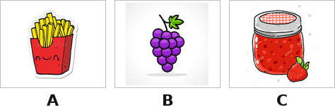
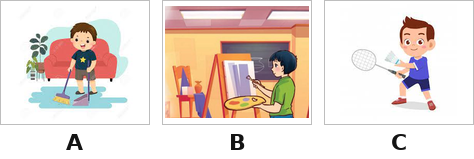
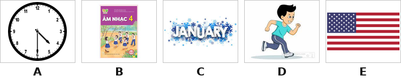
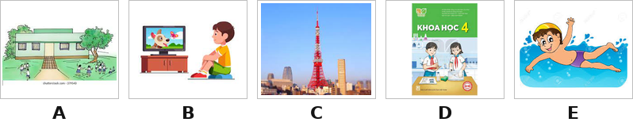

Thời gian: 35 phút. Còn 10 phút hệ thống nhắc; hết giờ có thêm 5 phút gia hạn rồi tự động nộp.
Bài làm ở chế độ toàn màn hình. Chuyển tab, mất focus, thoát toàn màn hình đều bị ghi nhận và báo cho giáo viên.
Không dùng chuột phải, sao chép/dán, phím tắt. Đáp án và giải thích chi tiết hiển thị sau khi nộp bài.
Đã nghe: 0/3 lần. Số lần nghe tối đa: 3.
Listening – Part 1. Listen and tick (nghe và chọn tranh đúng).
1

Nghe và chọn tranh đúng.
2
Nghe và chọn tranh đúng.
3
Nghe và chọn tranh đúng.
4

Nghe và chọn tranh đúng.
Listening – Part 2. Listen and number (nghe và đánh số; tranh B là ví dụ).

5
Tranh A là câu số mấy trong bài nghe?
6
Tranh C là câu số mấy trong bài nghe?
7
Tranh D là câu số mấy trong bài nghe?
8
Tranh E là câu số mấy trong bài nghe?
Listening – Part 3. Listen and draw line (nghe và nối số thứ tự với tranh; câu 0 – tranh B là ví dụ).

9
Nối (chọn đáp án đúng cho từng dòng):
Câu 1→
Câu 2→
Câu 3→
Câu 4→
Listening – Part 4. Listen and write (nghe và điền từ).
10
There’s some on the table.
11
He’s from .
12
What day is it today? – It’s .
13
My favourite subject is .
Reading – Part 1. Read and match the words with pictures (nối từ với tranh; tranh B là ví dụ).
14
Nối (chọn đáp án đúng cho từng dòng):
go to bed→
water→
nine forty-five→
birthday party→
Reading – Part 2. Read and choose A, B or C to complete the text (đọc, chọn từ điền vào chỗ trống).
Hello, my name is Hoa. I’m from Viet Nam. I was on holiday in Nha Trang last summer. The beach was very beautiful. We went (1) ______ in the sea and then built sandcastles in the afternoon.
In the evening, we had seafood at a restaurant, it was excellent. The people were friendly (2) ______ helpful. We also watched a film at the (3) ______, it was interesting. My holiday was very nice.
15
Chọn từ điền vào chỗ trống (1).
16
Chọn từ điền vào chỗ trống (2).
17
Chọn từ điền vào chỗ trống (3).
Reading – Part 3. Read and tick True or False (đọc đoạn văn, True hay False?).
Hung is a pupil at Quang Trung Primary school. Every day he gets up at 6 o’clock. He has breakfast at six twenty and goes to school at six forty-five. School starts at 7:00 a.m and finishes at 10:30 a.m. He goes home at 10:45. He has lunch at 11.15. In the afternoon, he often plays football with his friends at 4:00. In the evening he does his homework or listens to music. Then, he goes to bed at 9:30.
18
School starts at seven a.m and finishes at ten thirty a.m.
19
In the evening, he does his housework or listens to music.
Writing – Part 1. Look at the pictures and the letters. Write the words (nhìn tranh, sắp xếp chữ cái thành từ).
20
Sắp xếp các chữ cái: niraBit →
21
Sắp xếp các chữ cái: naledemo →
22
Sắp xếp các chữ cái: tar →
Writing – Part 2. Rearrange the words to make the sentences (sắp xếp từ thành câu đúng).
23
Sắp xếp thành câu đúng:
24
Sắp xếp thành câu đúng:
25
Sắp xếp thành câu đúng:
--:--
Bắt đầu làm bài kiểm tra
Nhập thông tin để hệ thống ghi nhận kết quả.
Nhắc giờ
⏰ Đã hết giờ làm bài
Bạn có thêm 5 phút để hoàn tất. Hết 5 phút bài sẽ tự động nộp.
⚠ Bạn đã thoát toàn màn hình
Hành vi này đã được ghi nhận. Hãy quay lại chế độ toàn màn hình để tiếp tục làm bài.